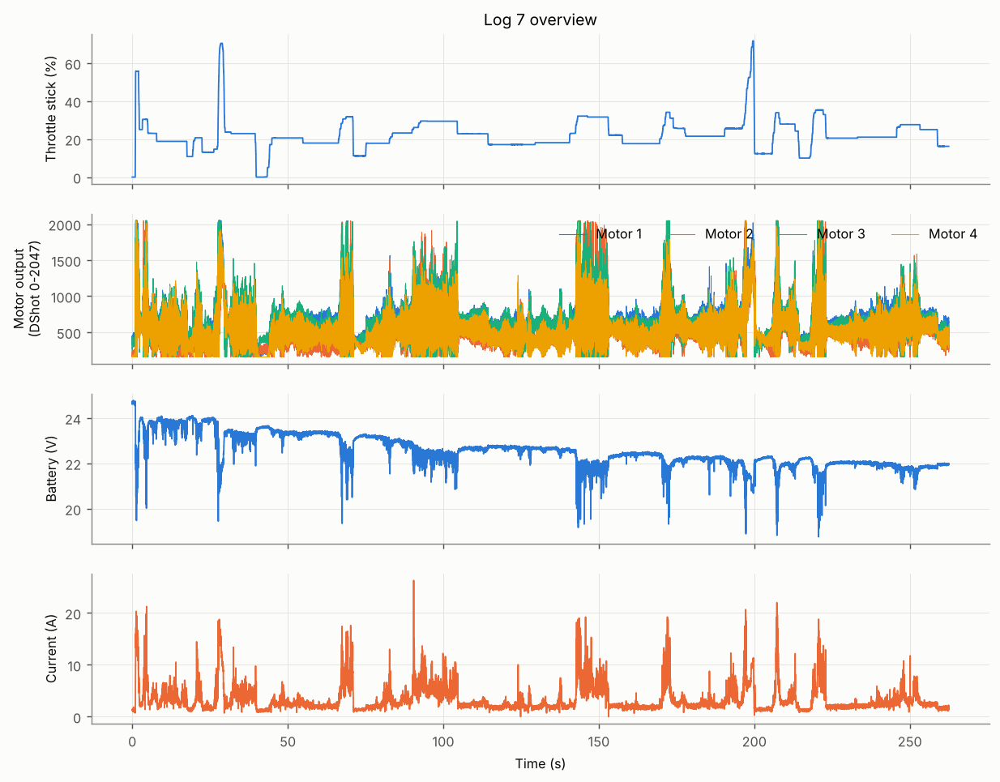
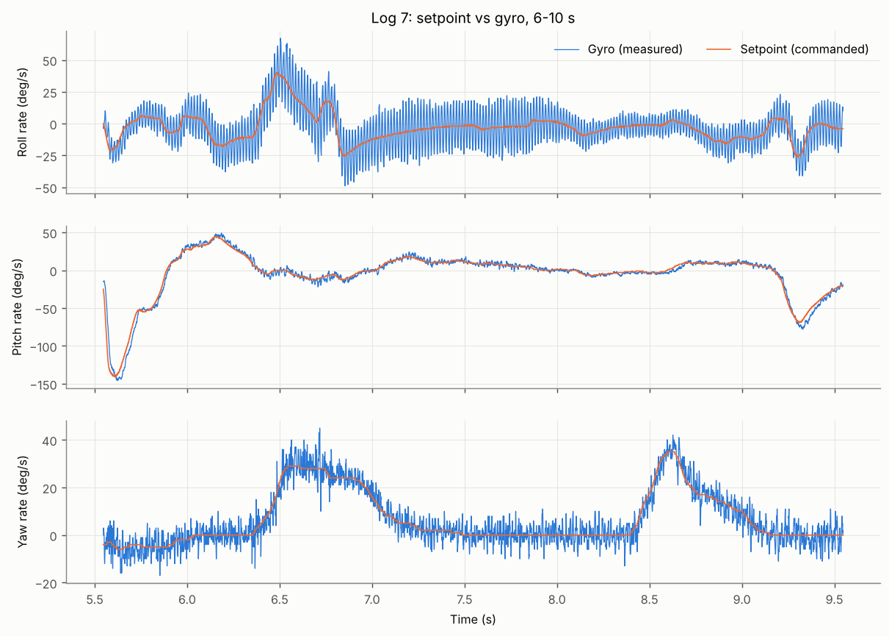
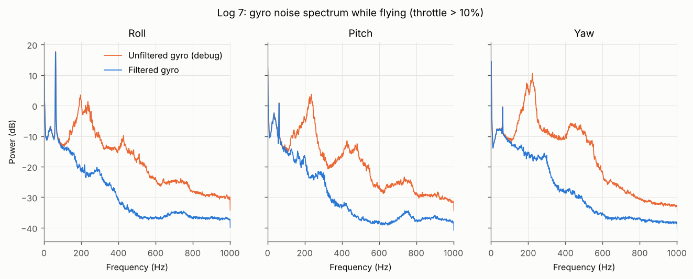
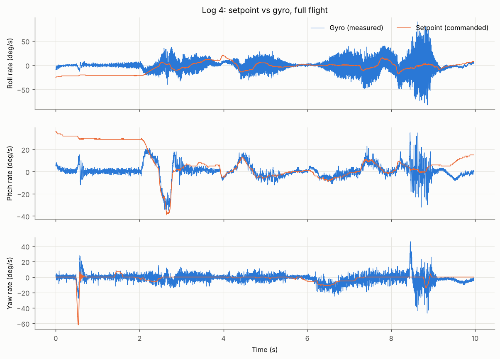
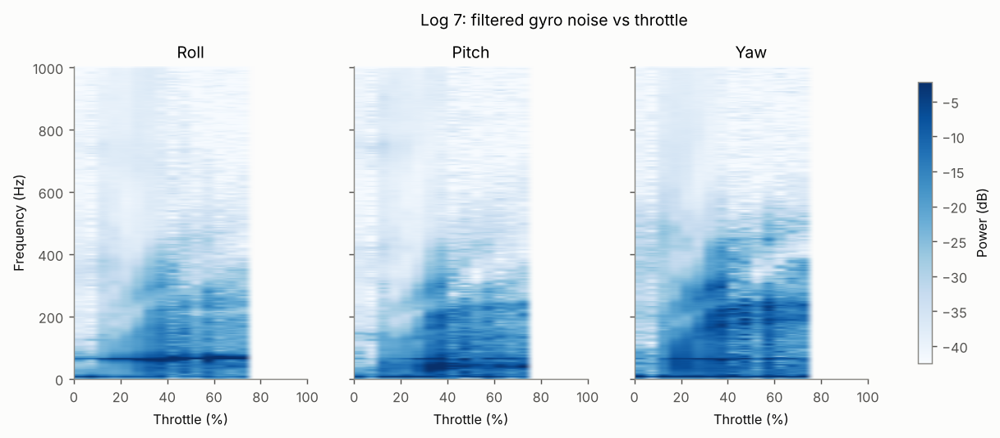
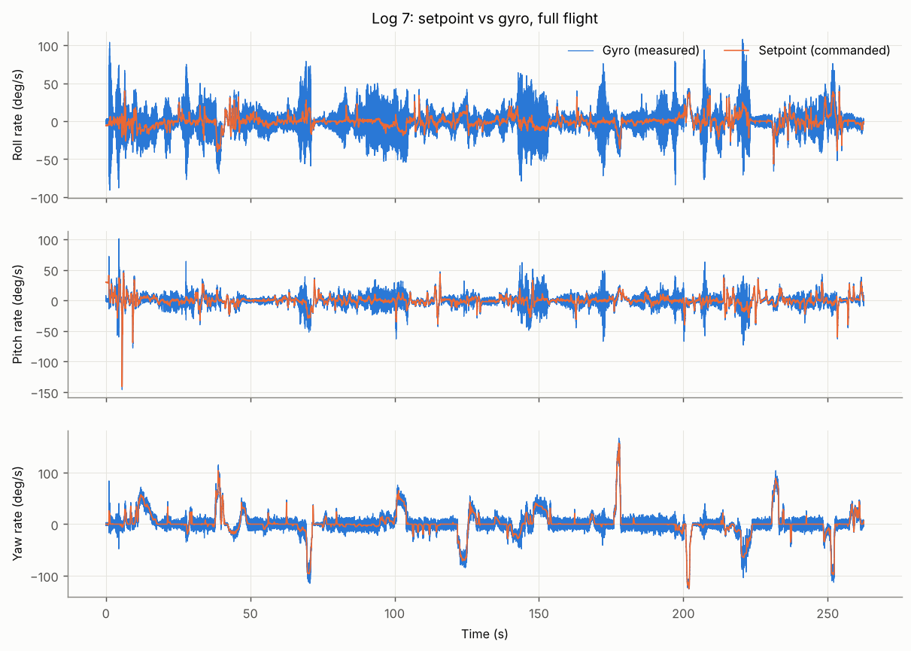

5 in quad, Foxeer F722V2 flight controller, Betaflight 4.3.0, 6S 1550 mAh 150C batteries, analysis in Python.
Betaflight Blackbox data from a 4 min 22 s flight were decoded and analyzed in the time and frequency domains. Results show (1) a throttle-invariant 62 Hz roll oscillation that passes through the gyro and D-term filters unattenuated, (2) a persistent rear-biased thrust distribution consistent with an aft center of gravity, (3) 15 to 25 dB attenuation of the 200 to 450 Hz motor noise band, and (4) an under-scaled current sensor.
| Parameter | Value |
|---|---|
| Flight controller | Foxeer F722V2, Betaflight 4.3.0 |
| Battery | 6S 1550 mAh 150C |
| Motor protocol | DShot600, bidirectional; RPM filter, 3 harmonics |
| PID loop / log rate | 8 kHz / 2 kHz |
| PID gains (P / I / D) | Roll 51 / 64 / 36; Pitch 56 / 71 / 39; Yaw 51 / 64 / 0 |
| Debug mode | GYRO_SCALED (pre-filter gyro) |
| Flight mode | Angle |
Seven logs were recorded to 16 MB onboard flash. Logs 1 to 3, 5 and 6 are bench arms and were excluded. Log 4 is a 10 s hover with a slow throttle ramp. Log 7 is a 4 min 22 s flight, truncated at flash capacity; all results are from log 7 unless noted. Logs were decoded in Python and analyzed for setpoint tracking, PID term contributions, power spectra (raw vs. filtered gyro), throttle-binned spectrograms, per-motor output and step response.

Fig. 1. Throttle, motor outputs, battery voltage and current. Motor outputs fluctuate between idle and near-saturation at ~20% throttle.
Roll rate oscillates at 62 Hz, amplitude ~±20 deg/s, for the full flight with the stick centered. Pitch and yaw track setpoint closely.

Fig. 2. Setpoint (orange) vs. gyro (blue), 0.5 s window. Roll: ~31 cycles in 0.5 s.

Fig. 3. Gyro power spectrum, raw (orange) vs. filtered (blue). Roll peak at 62 Hz with equal amplitude before and after filtering.

Fig. 4. Raw gyro spectrogram vs. throttle. Diagonal band (200 to 450 Hz): rotor-synchronous noise. Horizontal line at 62 Hz: throttle-invariant.

Fig. 5. PID term outputs. Roll D-term: ±100 to 150; roll P-term: small.

Fig. 6. Log 4 setpoint vs. gyro. Roll oscillation at 62.6 Hz.

Fig. 7. Left: mean motor output. Rear motors (M1, M3) exceed front motors (M2, M4) by ~100 DShot units in all four flight quarters. Right: mean I-term. Roll ≈ 0, pitch ≈ +27, yaw ≈ +8.

Fig. 8. Filtered gyro spectrogram vs. throttle. The 200 to 450 Hz band is attenuated 15 to 25 dB relative to raw (Fig. 3).
Cell voltage: 4.10 V at rest, 3.66 V after ~4 min, 3.13 V minimum under load (Fig. 1). Reported consumption: ~250 mAh (16% of rated capacity).

Fig. 9. Setpoint vs. gyro, full flight.

Fig. 10. Estimated step response. Sample size: 2 roll, 6 pitch events (Angle mode, low stick input); not statistically meaningful.

Fig. 11. Log 4 overview. Throttle ramp to ~21%; motor fluctuation present at low throttle.
Roll oscillation. The 62 Hz frequency does not scale with throttle (Fig. 4), so it is not rotor-synchronous. It lies below the lowest D-term low-pass cutoff (75 Hz) and is therefore unfiltered (Fig. 3). The D-term dominates the roll correction (Fig. 5), driving the motor fluctuation in Fig. 1. Two mechanisms fit: a control-loop limit cycle from excess roll D gain, or a structural resonance (stack, arm, camera mount) amplified by the D-term. The data do not distinguish them. Recurrence at the same frequency in log 4 (Fig. 6) indicates a systematic source.
Thrust asymmetry. In the default motor mapping, M1 and M3 are the rear pair. A front-rear output split with a sustained positive pitch I-term indicates an aft center of gravity (battery or camera placement). An initial bent-prop hypothesis was rejected: M1 and M3 are not a diagonal pair. Prop damage cannot be excluded without per-motor RPM logging. The small yaw I-term offset (+8) is inconclusive. This analysis assumes the default motor mapping.
Filtering. The RPM filter and dynamic notch effectively suppress rotor-synchronous noise (Fig. 8).
Current sensor. A 0.44 V/cell resting drop is inconsistent with 16% capacity use, indicating the current sensor scale is under-reading.